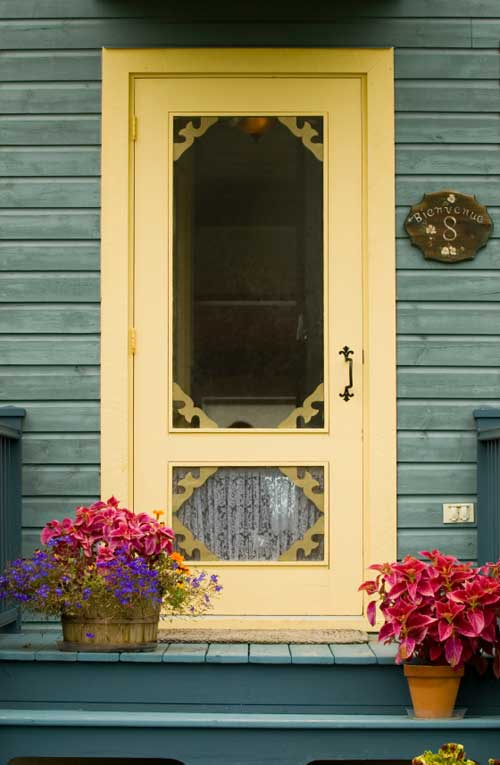
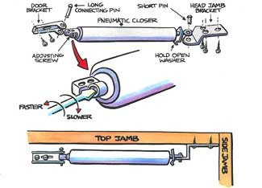

In the past, the automatic screen-door closer was a large spring, guaranteed to make the door close emphatically and make children cry by pinching their fingers or pulling their hair. Then technology came along, with a door-mounted shock absorber that gently, safely and quietly closes the door.
A shattering Slam! cuts right through your pleasant dreams. Few other ambient noises are so uniquely attuned to the human nervous system. Even the cat, which was sleeping peacefully on your legs, spasms awake and jumps down to seek cover. Anywhere within earshot, either sleeping on the couch or the hammock, immersed in a peace that passeth understanding, you soon realize that adjusting that door is a must-do chore.
So you rise, stretch and fetch a slotted and a Phillips screwdriver, a can of light machine oil, and prepare to take on that aggressive door.
Fortunately, it’s not rocket science. The unit is basically a spring-loaded shock absorber. Prop the door open and examine the mechanism. At the end of the piston that mounts to the door, there is an inset screw. Turn it 180 degrees clockwise and let the door close.
Too slowly? Door doesn’t close all the way? Turn the screw 90 degrees counterclockwise and try that. After each adjustment, I open the door fully and let it hiss closed until I’m satisfied with the operation of the door. By making minute adjustments, you can tune a screen-door closer to fit your fancy.
While you are tinkering with a large spring-loaded piston around hinges and other dangerous moving parts, avoiding a painful blood blister should be in the front of your mind. If the little lock-open tab that slides along the piston is accidentally released, the spring can suck the web of your hand right into the tube, and pinch it. It will hurt a lot. This is the voice of experience - it’s why I sometimes use my trusty door wedges even for this job, rather than trusting the little sliding lock-open tab.
As long as I’m there, I also check out the little felt cushions (on wood doors) or rubber seals (combination storm/screen) between the door and the jamb. Finally, I oil the hinges and the latch.
Everyone will notice the improvement and can resume resting.
For more information on repairing screen doors, see How to Repair Screen Doors.
Share your tips for maintaining and repairing doors in the comments section below.
|
 ISTOCKPHOTO/MICHAEL WESTHOFF Older screen doors may have only a spring, not a piston, to pull the door closed. But you can install a shock-absorbing piston so the door closely quietly. |
 BOB RECH With Phillips and flathead screwdrivers, you can make all the necessary adjustments so that your screen door closes quietly and securely. |
|